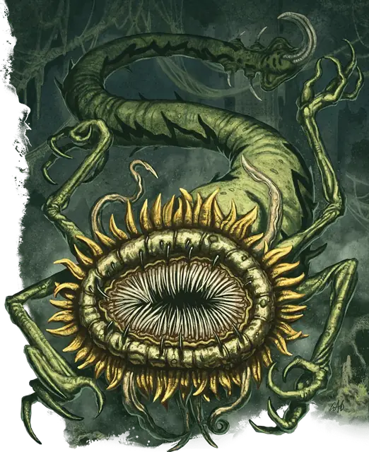

Фаэримм-агент
Phaerimm Agent
Большая Аберрация, Нейтральная Злая

Класс Защиты 15 Инициатива +4 (14)
Хиты 123 (19к10 + 19)
Скорость 10 футов, Полёта 40 футов (парит)
| мод | спас | ||
|---|---|---|---|
| СИЛ | 12 | +1 | +1 |
| ЛОВ | 18 | +4 | +4 |
| ТЕЛ | 12 | +1 | +4 |
| мод | спас | ||
|---|---|---|---|
| ИНТ | 17 | +3 | +6 |
| МДР | 16 | +3 | +6 |
| ХАР | 18 | +4 | +7 |
Иммунитеты Очарованный
Чувства пассивное Восприятие 16, Истинное зрение 120 футов
Языки знает Общий и Глубинную речь, но не говорит, Телепатия 120 фт.
Опасность 8 (3 900 опыта; БВ +3)
Особенности
Сопротивление магии. Фаэримм совершает с Преимуществом спасброски от заклинаний и прочих магических эффектов.
Действия
Мультиатака. Фаэримм совершает три атаки Кошмарным жалом или Лучом искажения разума в любой комбинации.
Кошмарное жало. Бросок рукопашной атаки: +7, досягаемость 5 фт. Попадание: 7 (1к6 + 4) Колющего урона плюс 13 (2к12) урона Ядом.
Луч искажения разума. Бросок дальнобойной атаки: +7, дистанция 120 фт. Попадание: 13 (2к8 + 4) Психического урона, и цель получает состояние Очарованный до начала следующего хода фаэримма.
Сотворение заклинаний. Фаэримм-агент сотворяет одно из следующих заклинаний, не нуждаясь в компонентах заклинания (заклинательная характеристика — Харизма, Сл спасброска заклинаний 15):
Неограниченно: Волшебная рука, Обнаружение магии, Обнаружение мыслей
1/день каждое: Образ, Подсматривание, Синаптический разряд
Бонусные действия
Телепортация. Фаэримм телепортируется на расстояние до 30 футов в видимое им незанятое пространство.
Реакции
Защитная магия (3/день). Фаэримм сотворяет Контрзаклинание или Щит в ответ на условие этого заклинания (заклинательная характеристика — та же, что для Сотворения заклинаний).
Бонус мастерства +3
Среда обитания Город, Подземье
Сокровища Магические, Инструментальные
Фаэриммы
Чужеродные, одержимые магией кукловоды
Фаэриммы — злобные чужеродные существа, стремящиеся подчинить себе всех разумных существ. Коническое тело фаэримма колышется в воздухе, сужаясь от огромного плоского рта, окружённого четырьмя тонкими руками. Завершается тело ядовитым жалом, к которому фаэримм прибегает лишь тогда, когда магия оказывается бессильна.
В древности фаэриммы опустошили некогда могущественную империю Нетерил. Задолго до её возвышения они были заточены под великой пустыней Анаурох, где и поныне вынашивают планы возвращения былого владычества.
Совершите бросок по таблице «Махинации фаэриммов» для вдохновения или определите сами, чем может заниматься встреченный агент фаэриммов.
Махинации фаэриммов
| 1к6 | Фаэримм… |
| 1 | Разыскивает обломки разбитой железной пластины с рунной гравировкой. |
| 2 | Тихо подчиняет своей воле жителей деревушки, представая загадочной доброй сущностью. |
| 3 | Ищет безопасное место для созревания выводка фаэриммов-детёнышей. |
| 4 | Рьяно оберегает Необычный магический предмет с нетерильскими отметинами. |
| 5 | Истязает незадачливого ученика мага, чтобы выведать магические секреты. |
| 6 | Готовит ритуал для вызова фаэриммов из ближайшего места заточения. |
Фаэриммы-агенты странствуют по надземному миру, разыскивая могущественную магию, способную дать власть над другими.